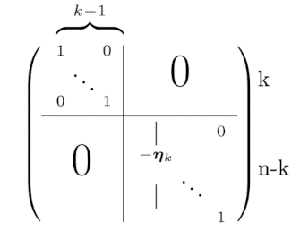

Facteurs LU d’une matrice non singulière
Contents
try:
import sympy
except ModuleNotFoundError:
!pip3 install --quiet sympy
import sympy
import numpy, matplotlib
Facteurs LU d’une matrice non singulière#
Méthode#
Quand on a plusieurs systèmes linéaires à résoudre avec la même matrice et des seconds membres différents, on a intérêt lors de la première résolution à garder les coefficients des pivotages successifs en mémoire. Cela correspond à garder la factorisation \(LU\) de la matrice.
En effet, chaque pivotage peut être représenté par une matrice élémentaire qui ne diffère de l’identité que par une sous-colonne.
Reprenons le pivotage de la matrice \({\bf A^{(k)}}\) à l’étape \(k\). Soit \({\bf \eta_k}\) le vecteur de \(\mathbb R^{n-k}\) dont les composantes sont \(\eta_{ik}=a^{(k)}_{ik}/a^{(k)}_{kk}\). On a donc (en supposant \(a^{(k)}_{kk}\ne 0\))
\( {\bf A^{(k+1)}}={\bf E_kA^{(k)}} \)
où \({\bf E_k}\) est la matrice élémentaire suivante

On a donc, après \(n-1\) pivotages
\(\begin{equation} {\bf A^{(n-1)}}={\bf E_{n-1}E_{n-2}}\cdots {\bf E_1 A}.\label{MatriceU} \end{equation}\)
Notons \({\bf U}\) la matrice triangulaire supérieure \({\bf A^{(n-1)}}\) et réécrivons la relation précédente
\( {\bf A}={\bf E_1^{-1}}\cdots {\bf E_{n-1}^{-1} U}\)
On vérifie que la matrice inverse \({\bf E_k^{-1}}\) a la même forme que \({\bf E_k}\) avec les éléments de la sous-colonne \(k\) changés de signe et que les produits \({\bf E_k^{-1}E_{k+1}^{-1}}\) s’effectuent sans calcul en accolant les vecteurs \({\bf \eta_k}\) et \({\bf \eta_{k+1}}\) dans les colonnes \(k\) et \(k+1\). On peut donc écrire \({\bf A}={\bf LU}\) où \({\bf L}\) est une matrice triangulaire inférieure dont les éléments diagonaux sont égaux à 1 et les éléments sous la diagonale sont \(l_{ij}=\eta_{ij}.\)
Example 8
Soit \({\bf A} = \begin{pmatrix}1&4&7\\2&5&8\\3&6&10\end{pmatrix}\).
On pivote tout d’abord selon \(a_{11}\). La matrice de transformation élémentaire est \({\bf E_1} = \begin{pmatrix}1&0&0\\\textcolor{red}{-2}&1&0\\\textcolor{red}{-3}&0&1\end{pmatrix}\) avec \({\bf \eta_1} = \begin{pmatrix} \textcolor{red}{2}\\\textcolor{red}{3}\end{pmatrix}\) et \( {\bf E_1A} =\begin{pmatrix}1&4&7\\0&-3&-6\\0&-6&-11\end{pmatrix}\)
On pivote ensuite selon \(a^{(2)}_{22}\). La matrice de transformation élémentaire est
\({\bf E_2} = \begin{pmatrix}1&0&0\\0&1&0\\0&\textcolor{blue}{-2}&1\end{pmatrix}\), avec \({\bf \eta_2} = \begin{pmatrix} \textcolor{blue}{2}\end{pmatrix}\) et \( {\bf E_2E_1A} =\begin{pmatrix}1&4&7\\0&-3&-6\\0&0&1\end{pmatrix}={\bf U}\)Finalement \({\bf L} = \begin{pmatrix}1&0&0\\\textcolor{red}{2}&1&0\\\textcolor{red}{3}&\textcolor{blue}{2}&1\end{pmatrix}\)
Observons que les éléments non diagonaux de \({\bf L}\) peuvent être rangés directement à la place des éléments de \({\bf A}\) correspondants. La matrice \({\bf A}\) est donc recouverte par sa factorisation \({\bf LU}\) et le coût de stockage est en \(n^2\).
Grâce à cette factorisation (qui ne coûte donc pas plus cher que la triangularisation), tout nouveau système linéaire \({\bf Ax}={\bf b'}\) peut être résolu par la résolution de deux systèmes triangulaires (donc en \(O(n^2)\) flops). En effet, pour résoudre \({\bf LUx}={\bf b'}\), on résout d’abord \({\bf Ly}={\bf b'}\) puis \({\bf Ux}={\bf y}\).
Example 9
Soit \({\bf A} = \begin{pmatrix}1&4&7\\2&5&8\\3&6&10\end{pmatrix}\).
En appliquant l’algorithme de factorisation \({\bf LU}\) (cf. ci-dessus), on obtient
\({\bf L} = \begin{pmatrix}1&0&0\\2&1&0\\3&2&1\end{pmatrix}\quad {\bf U} = \begin{pmatrix}1&4&7\\0&-3&-6\\0&0&1\end{pmatrix}\)
Si \({\bf b} = \begin{pmatrix}1\\1\\1\end{pmatrix}\), \({\bf Ly}={\bf b}\) donne \({\bf y} = \begin{pmatrix}1\\-1\\0\end{pmatrix}\) et \({\bf Ux}={\bf y}\) donne \({\bf x} =\frac{1}{3} \begin{pmatrix}-1\\1\\0\end{pmatrix}\)
Quand aucun pivot nul n’est rencontré, \({\bf A}\) peut se mettre sous la forme \({\bf LU}\) et cette factorisation est unique. En effet, s’il existe deux factorisations \({\bf L_1U_1}\) et \({\bf L_2U_2}\) de \({\bf A}\), on a alors \({\bf L_1U_1}={\bf L_2U_2}\). Ce qui implique que \({\bf L_2^{-1}L_1}={\bf U_2U_1^{-1}}\) et le produit de deux matrices inférieures (resp. supérieures) étant une matrice triangulaire inférieure (resp. supérieure), ces produits sont nécessairement une matrice diagonale. C’est l’identité car \((l_1)_{ii}=(l_2)_{ii}=1\) pour tout \(i\).
Dans le cas d’une stratégie de pivot partiel, si \({\bf P_k}\) est la matrice de permutation des lignes à l’itération \(k\), on peut écrire
\({\bf A^{(k+1)}}={\bf E_kP_kA^{(k)}}.\)
En fait, les différentes permutations peuvent être résumées dans la matrice
\({\bf P}={\bf P_{n-1}P_{n-2}}\cdots {\bf P_1}\)
et on obtient la décomposition générale suivante :
Theorem 5 (Factorisation \({\bf PA} = {\bf LU}\))
Pour toute matrice \({\bf A}\) non singulière de taille \(n\), il existe une matrice de permutation \({\bf P}\), une matrice triangulaire inférieure \({\bf L}\) telle que \(l_{ii}=1\), pour tout \(i\), et une matrice triangulaire supérieure \({\bf U}\), telles que
\({\bf PA}={\bf LU}.\)
L’algorithme Algorithm 4 montre les différentes étapes de la factorisation \({\bf LU}\) avec recherche du pivot partiel. En sortie, \({\bf A}\) contient les facteurs \({\bf L}\) et \({\bf U}\) de la matrice et \(\sigma\) les permutations de lignes éventuelles.
Algorithm 4 (Factorisation LU)
Entrée : La matrice \({\bf A}\)
Sortie : Les facteurs \({\bf L}\) et \({\bf U}\), les permutations \(\sigma\)
\(\sigma(i)=i\), \(i\in[\![1,n]\!]\) (initialisation du vecteur des permutations)
Pour \(k=1,\ldots, n-1\)
Recherche du pivot\(c_p\leftarrow |a_{kk}|\)
\(i_p\leftarrow k\)
Pour \(i=k+1,\ldots, n\)
Si \( |a_{ik}|> c_p\)
\(c_p\leftarrow |a_{ik}|\)
\(i_p\leftarrow i\)
PermutationSi \(i_p\ne k\)
\(\sigma(k)=i_p\)
\(\sigma_{i_p} = k\)
Pour \(i=k+1,\ldots, n\)
Remplissage de la colonne k\(a_{ik}\leftarrow \frac{a_{ik}}{a_{kk}}\)
Modification des lignes qui n'ont pas encore été ligne-pivotPour \(j=k+1,\ldots,n+1\)
\(a_{ij} \leftarrow a_{ij}- a_{ik}a_{kj}\)
Si \(\sigma_i=j\) alors les lignes \(i\) et \(j\) ont été permutées. Les permutations doivent être repercutées sur le second membre lors de la résolution de \({\bf Ly}={\bf b}\).
Exemple numérique#
from fractions import Fraction
from sympy import *
init_printing(use_latex = 'mathjax')
Soit A = \(\begin{bmatrix} 1 & -2 & 1 \\ 3 & 2 & -2 \\ 6 & -1 & -1 \end{bmatrix} \). L’idée de la décomposition LU est d’appliquer une suite de transformations élémentaires E pour transformer \(A\) en \(U\). Les matrices \(E\) sont calculées en faisant subir à l’identité les mêmes opérations de pivotage qu’à la matrice traitée.
La première étape consiste à mettre un 0 en position (2,1). La transformation élémentaire correspondante \(E_{21}\) est donc
A = Matrix([[1., -1., 1.], [3., 2., -2.], [6., -1., -1.]])
E21 = Matrix([[1, 0, 0], [-3, 1, 0], [0, 0, 1]])
print ('Résultat de la première transformation élémentaire')
E21 * A
Résultat de la première transformation élémentaire
On met ensuite un 0 en position (3,1). La transformation élémentaire est \(E_{31}\) et le résultat \(E_{31}.E_{21}.A\)
E31 = Matrix([[1, 0, 0], [0, 1, 0], [-6, 0, 1]])
print ('Résultat de la deuxième transformation élémentaire')
E31 * E21 * A
Résultat de la deuxième transformation élémentaire
On procède de même sur la deuxième colonne, en position (3,2)
E32 = Matrix([[1, 0 , 0], [0, 1, 0], [0, str(Fraction(-11./8.)), 1]])
print ('Résultat de la troisième transformation élémentaire')
U = E32 * E31 * E21 * A
U
Résultat de la troisième transformation élémentaire
On a alors
\( E ^{ -1 }_{ 21 }E^{ -1 }_{ 31 } E^{ -1 }_{ 32 }E_{ 32 }E_{ 31 }E_{ 21 }A=A \)
Les inverses des transformations élémentaires sont calculées simplement en changeant de signe sous la diagonale
les produits de matrices élémentaires sont simplement obtenus en concaténant les colonnes successives des matrices élémentaires
Ainsi
E21, E21.inv()
et par exemple
E31,E32,E31*E32
Alors
\(A = E ^{ -1 }_{ 21 }E^{ -1 }_{ 31 } E^{ -1 }_{ 32 }E_{ 32 }E_{ 31 }E_{ 21 }A=E ^{ -1 }_{ 21 }E^{ -1 }_{ 31 } E^{ -1 }_{ 32 }U\)
On pose \(L=E ^{ -1 }_{ 21 }E^{ -1 }_{ 31 } E^{ -1 }_{ 32 }\) de sorte que \(A=LU\)
L = E21.inv() * E31.inv() * E32.inv()
L
On vérifie le résultat
A, L * U
Cas particuliers#
Matrices symétriques#
Dans ce cas, \({\bf U}\) peut s’écrire \({\bf U}={\bf DL^\top} \) où \({\bf D}\) est la matrice diagonale contenant les pivots successifs. On a donc la factorisation \({\bf A}={\bf LDL^\top }\).
La complexité de l’algorithme est alors de \(n^3/6\) flops.
Matrices bandes#
Ce sont des matrices symétriques telles que \(a_{ij}=0\) pour \(|i-j|>p\) (\(p\) est la largeur de bande de la matrice, \(p<n\)). Ces matrices interviennent couramment dans la discrétisation d’équations différentielles. Il est alors facile de montrer que les facteurs \({\bf LU}\) respectent la bande. On a alors intérêt de stocker la matrice (et ses facteurs \({\bf LU}\)) sous la forme de tableau à \(n\) lignes et \(p\) colonnes et la complexité est en \(np^2/2\) flops.
Matrices symétriques définies positives#
Les matrices définies positives possèdent une factorisation unique \({\bf LDL^\top} \) avec des pivots successifs strictement positifs. La factorisation peut s’effectuer directement sans pivotage par identification terme à terme en \(n^3/6\) flops par l’algorithme de Cholesky.
Autres applications#
Calcul de l’inverse d’une matrice#
On a vu précédemment que la résolution d’un système linéaire ne nécessite pas le calcul explicite de l’inverse d’une matrice. Quand on a besoin néanmoins de la calculer, on peut procéder de la manière suivante, basée sur la factorisation \({\bf LU}\) de la matrice :
Calculer les facteurs \({\bf LU}\) de la matrice : \({\bf PA}={\bf LU}\)
Résoudre les \(n\) systèmes linéaires \({\bf LUx^i}={\bf Pe_i}\), où \({\bf e_i}\), \(i\in [\![1, n]\!]\), est le \(i^e\) vecteur de la base canonique de \(\mathbb R^n\). La solution \({\bf x^i}\) est la \(i^e\) colonne de \({\bf A^{-1}}\).
Le coût total apparent est de \(n^3/3+n^3=4n^3/3\) flops. Mais on peut montrer que, grâce à la structure particulière des seconds membres des systèmes linéaires successifs, le coût réel n’est que de \(n^3\) flops.
Une approche équivalente couramment utilisée, mais qui ne passe pas par le calcul des facteurs \({\bf LU}\), est la méthode dite de Gauss-Jordan qui consiste à pivoter complètement le système paramétré \({\bf Ax-y}={\bf 0}\).
On pivote cette fois sur la colonne entière de façon à transformer le système en un système diagonal \({\bf x}-{\bf A^{-1}y}={\bf 0}\). On peut observer que cette technique consiste à effectuer en parallèle à partir de la matrice identité les pivotages nécessaires à la transformation de \({\bf A}\) en la matrice identité.
Calcul du déterminant#
Le calcul du déterminant d’une matrice \(2\times 2\) est bien connu:
\(\begin{equation} \det\left[\begin{array}{rr} a & b \\ c & d\end{array}\right]=ad-bc \label{DetMat2x2} \end{equation}\)
ce qui permet de déterminer explicitement l’inverse d’une matrice \(2\times 2\) : \(\begin{equation} \left[\begin{array}{rr} a & b \\ c & d\end{array}\right]^{-1}=\frac{1}{ad-bc} \left[\begin{array}{rr} d & -b \\ -c & a\end{array}\right]. \label{InvMat2x2} \end{equation}\)
La généralisation des formules précédentes au cas des matrices \(n\times n\) conduit aux fameuses formules de Cramer que nous ne reproduirons pas ici car elles ont une complexité exponentielle, ce qui les rend impraticables. A titre d’exemple, pour calculer le déterminant d’une matrice \(20\times 20\) par la formule de Cramer il faut à peu près 15400 ans de calcul sur une machine de 100 Mips (soit \(10^8\) instructions par seconde). Avec la méthode des pivots le coût n’est que de \(3\cdot 10^{-5}\) secondes!
En pratique on calculera le déterminant après pivotage:
\( \det({\bf A})=(-1)^p\prod_{i=1}^nu_{ii} \)
où les \(u_{ii}, i\in[\![1, n]\!]\) sont les pivots et \(p\) le nombre de permutations effectuées au cours de la factorisation.